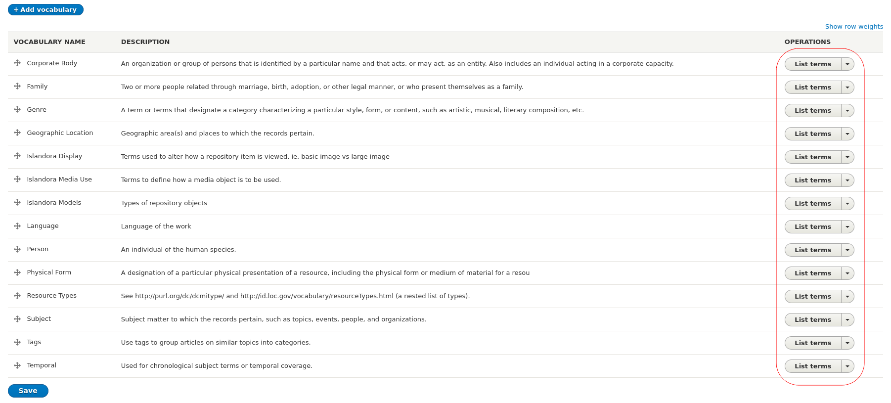

Workbench uses a CSV file to populate Islandora objects' metadata. This file contains the field values that is to be added to new or existing nodes, and some additional reserved columns specific to Workbench. Data in this CSV file can be:
- strings (for string or text fields) like
Using Islandora Workbench for Fun and Profit - integers (for
field_weight, for example) like1or7281 - the binary values
1or0 - Existing Drupal-generated entity IDs (term IDs for taxonomy terms or node IDs for collections and parents), which are integers like
10or3549 - structured strings, for typed relation (e.g.,
relators:art:30), link fields (e.g.,https://acme.net%%Acme Products), geolocation fields (e.g.,"49.16667,-123.93333"), and athority link data (e.g.,viaf%%http://viaf.org/viaf/10646807%%VIAF Record)
Note
As is standard with CSV data, values do not need to be wrapped in double quotation marks (") unless they contain an instance of the delimiter character (e.g., a comma) or line breaks. Spreadsheet applications such as Google Sheets, LibreOffice Calc, and Excel will output valid CSV data.
If you are using a spreadsheet application, it will take care of wrapping the CSV values in double quotation marks when they are necessary - you do not need to wrap the field values yourself.
Reserved CSV columns
The following CSV columns are used for specific purposes and in some cases are required in your CSV file, depending on the task you are performing (see below for specific cases). Data in them does not directly populate Drupal content-type fields.
| CSV field name | Task(s) | Note |
|---|---|---|
| id | create | This CSV field is used by Workbench for internal purposes, and is not added to the metadata of your Islandora objects. Therefore, it doesn't need to have any relationship to the item described in the rest of the fields in the CSV file. You can configure this CSV field name to be something other than id by using the id_field option in your configuration file. Note that if the specified field contains multiple values, (e.g. 0001|spec-86389), the entire field value will be used as the internal Workbench identifier. |
| node_id | update, delete, add_media, export_csv, delete_media_by_node | The ID of the node you are updating, deleting, or adding media to. Full URLs (including URL aliases) are also allowed in this CSV field. |
| file | create, add_media | See detail in "Values in the 'file' column", below. |
| media_use_tid | create, add_media | Tells Workbench which terms from the Islandora Media Use vocabulary to assign to media created in create and add_media tasks. This can be set for all new media in the configuration file; only include it in your CSV if you want row-level control over this value. More detail is available in the "Configuration" docs for media_use_tid. |
| url_alias | create, update | See detail in "Assigning URL aliases". |
| image_alt_text | create | See detail in "Adding alt text to images". |
| checksum | create | See detail in "Fixity checking". |
| term_name | create_terms | See detail in "Creating taxonomy terms". |
Values in the "file" column
Values in the file field contain the location of files that are used to create Drupal Media. Workbench can create only one media per CSV record; the type of media is determined by identifying in your configuration file a value from the "Islandora Media Use" vocabulary. File locations can be relative to the directory named in input_dir, absolute paths, or URLs. Examples of each:
- relative to directory named in the
input_dirconfiguration setting:myfile.png - absolute:
/tmp/data/myfile.png - URL:
http://example.com/files/myfile.png
Things to note about file values in general:
- Relative, absolute, and URL file locations can exist within the same CSV file.
- By default, if the
filevalue for a row is empty, Workbench's--checkoption will show an error. But, in some cases you may want to create nodes but not add any media. If you addallow_missing_files: trueto your config file for "create" tasks, you can leave thefilecolumn in your CSV empty. - By default, during
--check, Workbench will exit when it first encounters a missing file (or an emptyfilevalue). If you would prefer that Workbench checked for the existence of all files before exiting, includestrict_check: falsein your configuration. - If you want do not want to create media for any of the rows in your CSV file, include
nodes_only: truein your configuration file. More detail is available. filevalues that contain non-ASCII characters are normalized to their ASCII equivalents. See this issue for more information.
Things to note about URLs as file values:
- Workbench downloads files identified by URLs and saves them in the directory named in
input_dirbefore processing them further; within this directory, each file is saved in a subdirectory named after the value in the row'sid_fieldfield. It does not delete the files from these locations after they have been ingested into Islandora unless thedelete_tmp_uploadconfiguration option is set totrue. - Files identified by URLs must be accessible to the Workbench script, which means they must not require a username/password; however, they can be protected by a firewall, etc. as long as the computer running Workbench is allowed to retrieve the files without authenticating.
- Currently Workbench requires that the URLs point directly to a file or a service that generates a file, and not a wrapper page or other indirect route to the file.
Required columns
A small number of columns are required in your CSV, depending on the task you are performing:
| Task | Required in CSV | Note |
|---|---|---|
| create | id | See detail in "Reserved CSV fields", above |
| title | The node title. | |
| file | Empty values in the file field are allowed if allow_missing_files is present in your configuration file, in which case a node will be created but it will have no attached media. |
|
| update | node_id | The node ID of an existing node you are updating. |
| delete | node_id | The node ID of an existing node you are deleting. |
| add_media | node_id | The node ID of an existing node you are attaching media to. |
| file | Must contain a filename, file path, or URL. allow_missing_files only works with the create task. |
If a required field is missing from your CSV, --check will tell you.
Columns you want Workbench to ignore
In some cases you might want to include columns in your CSV that you want Workbench to ignore. More information on this option is available in the "Sharing the input CSV with other applications" section of the Workflows documentation.
CSV fields that contain Drupal field data
These are of two types of Drupal fields, base fields and content-type specific fields.
Base fields
Base fields are basic node properties, shared by all content types. The base fields you can include in your CSV file are:
title: This field is required for all rows in your CSV for thecreatetask. Optional for the 'update' task. Drupal limits the title's length to 255 characters,unless the Node Title Length contrib module is installed. If that module is installed, you can set the maximum allowed title length using themax_node_title_lengthconfiguration setting.langcode: The language of the node. Optional. If included, use one of Drupal's language codes as values (common values are 'en', 'fr', and 'es'; the entire list can be seen here. If absent, Drupal sets the value to the default value for your content type.uid: The Drupal user ID to assign to the node and media created with the node. Optional. Only available increatetasks. If you are creating paged/compound objects from directories, this value is applied to the parent's children (if you are creating them using the page/child-level metadata method, these fields must be in your CSV metadata).created: The timestamp to use in the node's "created" attribute and in the "created" attribute of the media created with the node. Optional, but if present, it must be in format 2020-11-15T23:49:22+00:00 (the +00:00 is the difference to Greenwich time/GMT). If you are creating paged/compound objects from directories, this value is applied to the parent's children (if you are creating them using the page/child-level metadata method, these fields must be in your CSV metadata).
All base fields can be included in create and update tasks.
Content type-specific fields
These fields correspond directly to fields configured in Drupal nodes, and data you provide in them populates their equivalent field in Drupal entities. The column headings in the CSV file must match machine names of fields that exist in the target node content type. Fields' machine names are visible within the "Manage fields" section of each content type's configuration, here circled in red:

These field names, plus the fields indicated in the "Reserved CSV fields" section above, are the column headers in your CSV file, like this:
file,id,title,field_model,field_description
IMG_1410.tif,01,Small boats in Havana Harbour,25,Taken on vacation in Cuba.
IMG_2549.jp2,02,Manhatten Island,25,"Taken from the ferry from downtown New York to Highlands, NJ. Weather was windy."
IMG_2940.JPG,03,Looking across Burrard Inlet,25,View from Deep Cove to Burnaby Mountain. Simon Fraser University is visible on the top of the mountain in the distance.
IMG_2958.JPG,04,Amsterdam waterfront,25,Amsterdam waterfront on an overcast day.
IMG_5083.JPG,05,Alcatraz Island,25,"Taken from Fisherman's Wharf, San Francisco."
Note
If content-type field values apply to all of the rows in your CSV file, you can avoid including them in the CSV and instead use "CSV field templates".
Single and multi-valued fields
Drupal allows for fields to have a single value, a specific maximum number of values, or unlimited number of values. In the CSV input file, each Drupal field corresponds to a single CSV field. In other words, the CSV column names must be unique, even if a Drupal field allows multiple values. Populating multivalued fields is explained below.
Single-valued fields
In your CSV file, single-valued fields simply contain the value, which, depending on the field type, can be a string or an integer. For example, using the fields defined by the Islandora Defaults module for the "Repository Item" content type, your CSV file could look like this:
file,title,id,field_model,field_description,field_rights,field_extent,field_access_terms,field_member_of
myfile.jpg,My nice image,obj_00001,24,"A fine image, yes?",Do whatever you want with it.,There's only one image.,27,45
In this example, the term ID for the tag you want to assign in field_access_terms is 27, and the node ID of the collection you want to add the object to (in field_member_of) is 45.
Multivalued fields
For multivalued fields, you separate the values within a field with a pipe (|), like this:
file,title,field_something
IMG_1410.tif,Small boats in Havana Harbour,One subvalue|Another subvalue
IMG_2549.jp2,Manhatten Island,first subvalue|second subvalue|third subvalue
This works for string fields as well as taxonomy reference fields, e.g.:
file,title,field_my_multivalued_taxonomy_field
IMG_1410.tif,Small boats in Havana Harbour,35|46
IMG_2549.jp2,Manhatten Island,34|56|28
Drupal strictly enforces the maximum number of values allowed in a field. If the number of values in your CSV file for a field exceed a field's configured maximum number of fields, Workbench will only populate the field to the field's configured limit.
The subdelimiter character defaults to a pipe (|) but can be set in your config file using the subdelimiter: ";" option.
Note
Workbench will remove duplicate values in CSV fields. For example, if you accidently use first subvalue|second subvalue|second subvalue in your CSV, Workbench will filter out the superflous second subvalue. This applies to both create and update tasks, and within update tasks, replacing values and appending values to existing ones. Workbench deduplicates CVS values silently: it doesn't log the fact that it is doing it.
Drupal field types
The following types of Drupal fields can be populated from data in your input CSV file:
- text (plain, plain long, etc.) fields
- integer fields
- boolean fields, with values 1 or 0
- EDTF date fields
- entity reference (taxonomy and linked node) fields
- typed relation (taxonomy) fields
- link fields
- geolocation fields
Drupal is very strict about not accepting malformed data. Therefore, Islandora Workbench needs to provide data to Drupal that is consistent with field types (string, taxonomy reference, EDTF, etc.) we are populating. This applies not only to Drupal's base fields (as we saw above) but to all fields. A field's type is indicated in the same place as its machine name, within the "Manage fields" section of each content type's configuration. The field types are circled in red in the screen shot below:

Below are guidelines for preparing CSV data that is compatible with common field types configured in Islandora repositories.
Text fields
Generally speaking, any Drupal field where the user enters free text into a node add/edit form is configured to be one of the Drupal "Text" field types.
Islandora Workbench supports non-Latin characters in CSV, provided the CSV file is encoded as UTF-8. For example, the following non-Latin text will be added as expected to Drupal fields:
- 一九二四年六月十二日 (Traditional Chinese)
- सरकारी दस्तावेज़, अखबारों में छपे लेख, अकादमिक किताबें (Hindi)
- ᐊᑕᐅᓯᖅ ᓄᓇ, ᐅᓄᖅᑐᑦ ᓂᐲᑦ (Inuktitut)
However, if all of your characters are Latin (basically, the characters found on a standard US keyboard) your CSV file can be encoded as ASCII.
Some things to note about Drupal text fields:
- Islandora Workbench populates Drupal text fields verbatim with the content provided in the CSV file, but, depending on a field's configuration, Drupal may apply text filters.
- Text fields may be configured to have a maximum length. Running Workbench with
--checkwill produce a warning if any of the values in your CSV file surpass the configured maximum length of a field. - Some specialized forms of text fields, such as EDTF, enforce or prohibit the presence of specific types of characters (see below for EDTF's requirements).
Taxonomy reference fields
Note
In the list of a content type's fields, as pictured above, Drupal uses "Entity reference" for all types of entity reference fields, of which Taxonomy references are one. The other most common kind of entity reference field is a node reference field.
Islandora Workbench lets you assign both existing and new taxonomy terms to nodes. Creating new terms on demand during node creation reduces the need to prepopulate your vocabularies prior to creating nodes.
In CSV columns for taxonomy fields, you can use either term IDs (integers) or term names (strings). You can even mix IDs and names in the same field:
file,title,field_my_multivalued_taxonomy_field
img001.png,Picture of cats and yarn,Cats|46
img002.png,Picture of dogs and sticks,Dogs|Sticks
img003.png,Picture of yarn and needles,"Yarn, Balls of|Knitting needles"
By default, if you use a term name in your CSV data that doesn't match a term name that exists in the referenced taxonomy, Workbench will detect this when you use --check, warn you, and exit. This strict default is intended to prevent users from accidentally adding unwanted terms through data entry error.
Terms can be from any level in a vocabulary's hierarchy. In other words, if you have a vocabulary whose structure looks like this:

you can use the terms IDs or labels for "Automobiles", "Sports cars", or "Land Rover" in your CSV. The term name (or ID) is all you need; no indication of the term's place in the hierarchy is required.
If you add allow_adding_terms: true to your configuration file for create and update tasks, Workbench will create the new term the first time it is used in the CSV file following these rules:
- If multiple records in your CSV contain the same new term name in the same field, the term is only created once.
- When Workbench checks to see if the term with the new name exists in the target vocabulary, it queries Drupal for the new term name, looking for an exact match against an existing term in the specified vocabulary. Therefore it is important that term names used in your CSV are identical to existing term names. The query to find existing term names follows these two rules:
- Leading and trailing whitespace on term names is ignored. Internal whitespace is significant.
- Case is ignored.
- If the term name you provide in the CSV file does not match an existing term name in its vocabulary, the term name from the CSV data is used to create a new term. If it does match, Workbench populates the field in your nodes with a reference to the matching term.
Adding new terms has some constraints:
- Terms created in this way do not have any external URIs. If you want your terms to have external URIs, you will need to either create the terms manually or add the URIs manually after the terms are created by Islandora Workbench.
- Workbench cannot distinguish between identical term names within the same vocabulary. This means you cannot create two different terms that have the same term name (for example, two terms in the Person vocabulary that are identical but refer to two different people). The workaround for this is to create one of the terms before using Workbench and use the term ID instead of the term string.
- Related to this, if the same term name exists multiple times in the same vocabulary (again using the example of two Person terms that describe two different people) you should be aware that when you use these identical term names within the same vocabulary in your CSV, Workbench will always choose the first one it encounters when it converts from term names to term IDs while populating your nodes. The workaround for this is to use the term ID for one (or both) of the identical terms, or to use URIs for one (or both) of the identical terms.
--checkwill identify any new terms that exceed Drupal's maximum allowed length for term names, 255 characters. If a term name is longer than 255 characters, Workbench will truncate it at that length, log that it has done so, and create the term.- Taxonomy terms created with new nodes are not removed when you delete the nodes.
- Currently, Islandora Workbench has the following limitations:
- It cannot create new taxonomy terms that have required fields other than the core term name field. This issue addresses that limitation. As that issue documents, in order to support additional fields on taxonomy terms (both required and optional), Workbench will need a way to express complex term data in its input CSV. If you have an opinion on how this can be done, please leave a comment at that issue.
- Workbench cannot currently create a new term that has another term as its parent (i.e. terms below the top level of a hierarchical taxonomy). However, for existing terms, Workbench doesn't care where they are in a taxonomy's hierarchy. Issue 236 will provide the ability to create terms at any level of a vocabulary's hierarchy. Creating taxonomy terms by including them in your CSV file adds new terms to the root of the applicable vocabulary.
Note
If you would rather import vocabularies before referencing them using Workbench, check out the Taxonomy Import contrib module.
Using term names in multi-vocabulary fields
While most node taxonomy fields reference only a single vocabulary, Drupal does allow fields to reference multiple vocabularies. This ability poses a problem when we use term names instead of term IDs in our CSV files: in a multi-vocabulary field, Workbench can't be sure which term name belongs in which of the multiple vocabularies referenced by that field. This applies to both existing terms and to new terms we want to add when creating node content.
To avoid this problem, we need to tell Workbench which of the multiple vocabularies each term name should (or does) belong to. We do this by namespacing terms with the applicable vocabulary ID.
For example, let's imagine we have a node field whose name is field_sample_tags, and this field references two vocabularies, "cats" and "dogs". To use the terms Tuxedo, Tabby, German Shepherd in the CSV when adding new nodes, we need to namespace them with vocabulary IDs like this:
field_sample_tags
cats:Tabby
cats:Tuxedo
dogs:German Shepherd
If you want to use multiple terms in a single field, you would namespace them all:
cats:Tuxedo|cats:Misbehaving|dogs:German Shepherd
To find the vocabulary ID (referred to above as the "namespace") to use, visit the list of your site's vocabularies at admin/structure/taxonomy:

Hover your pointer over the "List terms" button for each vocabulary to reveal the URL to its overview page. The ID for the vocabulary is the string between "manage" and "overview" in the URL. For example, in the URL admin/structure/taxonomy/manage/person/overview, the vocabulary ID is "person". This is the namespace you need to use to indicate which vocabulary to add new terms to.
CSV values containing term names that have commas (,) in multi-valued, multi-vocabulary fields need to be wrapped in quotation marks (like any CSV value containing a comma), and in addition, the need to specify the namespace within each of the subvalues:
"tags:gum, Bubble|tags:candy, Hard"
Using these conventions, Workbench will be certain which vocabulary the term names belong to. Workbench will remind you during its --check operation that you need to namespace terms. It determines 1) if the field references multiple vocabularies, and then checks to see 2) if the field's values in the CSV are term IDs or term names. If you use term names in multi-vocabulary fields, and the term names aren't namespaced, Workbench will warn you:
Error: Term names in multi-vocabulary CSV field "field_tags" require a vocabulary namespace; value "Dogs" in row 4 does not have one.
Note that since : is a special character when you use term names in multi-vocabulary CSV fields, you can't add a namespaced term that itself contains a :. You need to add it manually to Drupal and then use its term ID (or name, or URI) in your CSV file.
Using term URIs instead of term IDs
Islandora Workbench lets you use URIs assigned to terms instead of term IDs. You can use a term URI in the media_use_tid configuration option (for example, "http://pcdm.org/use#OriginalFile") and in taxonomy fields in your metadata CSV file:
field_model
https://schema.org/DigitalDocument
http://purl.org/coar/resource_type/c_18cc
During --check, Workbench will validate that URIs correspond to existing taxonomy terms.
Using term URIs has some constraints:
- You cannot create a new term by providing a URI like you can by providing a term name.
- If the same URI is registered with more than one term, Workbench will choose one and write a warning to the log indicating which term it chose and which terms the URI is registered with. However,
--checkwill detect that a URI is registered with more than one term and warn you. At that point you can edit your CSV file to use the correct term ID rather than the URI.
Entity Reference Views fields
Under development. See this Github issue for updates on supporting this field configuration.
Typed Relation fields
Typed relation fields contain information about the relationship (or "relation") between a taxonomy term and the node it is attached to. For example, a term from the Person vocabulary, "Jordan, Mark", can be an author, illustrator, or editor of the book described in the node. In this example, "author", "illustrator", and "editor" are the typed relations.
Note
Although Islandora supports Typed Relation fields that allow adding relations to other nodes, currently Workbench only supports adding relations to taxonomies. If you need support for adding Typed Relations to other entities, please leave a comment on this issue.
The Controlled Access Terms module allows the relations to be sets of terms from external authority lists (for example like the MARC Relators list maintained by the Library of Congress). Within a Typed Relation field's configuration, the configured relations look like this:

In this screenshot, "relators" is a namespace for the MARC Relators authority list, the codes "acp", "adi", etc are the codes for each relator, and "Art copyist", "Art director", etc. are the human-readable label for each relator.
Within the edit form of a node that has a Typed Relation field, the user interface adds a select list of the relation (the target taxonomy term here is "Jordan, Mark (30))", like this:

To be able to populate Typed Relation fields using CSV data with the three pieces of required data (authority list, relation type, target term), Islandora Workbench supports CSV values that contain the corresponding namespace, relator code, and taxonomy term ID, each separated by a colon (:), like this:
relators:art:30
In this example CSV value, relators is the namespace that the relation type art is from (the Library of Congress Relators vocabulary), and the target taxonomy term ID is 30.
Note
Note that the structure required for typed relation values in the CSV file is not the same as the structure of the relations configuration depicted in the screenshot of the "Available Relations" list above.
A second option for populating Typed Relation fields is to use taxonomy term names (as opposed to term IDs) as targets:
"relators:art:Jordan, Mark"
Warning
In the next few paragraphs, the word "namespace" is used to describe two different kinds of namespaces - first, a vocabulary ID in the local Drupal and second, an ID for the external authority list of relators, for example by the Library of Congress.
As we saw in the "Using term names in multi-vocabulary fields" section above, if the field that we are populating references multiple vocabularies, we need to tell Drupal which vocabulary we are referring to with a local vocabulary namespace. To add a local vocabulary namespace to Typed Relation field CSV structure, we prepend it to the term name, like this (note the addition of "person"):
"relators:art:person:Jordan, Mark"
(In this example, relators is the external authority lists's namespace, and person is the local Drupal vocabulary namespace, prepended to the taxonomy term name, "Jordan, Mark".)
If this seems confusing and abstruse, don't worry. Running --check will tell you that you need to add the Drupal vocabulary namespace to values in specific CSV columns.
The final option for populating Typed Relation field is to use HTTP URIs as typed relation targets:
relators:art:http://markjordan.net
If you want to include multiple typed relation values in a single field of your CSV file (such as in "field_linked_agent"), separate the three-part values with the same subdelimiter character you use in other fields, e.g. (|) (or whatever you have configured as your subdelimiter):
relators:art:30|relators:art:45
or
"relators:art:person:Jordan, Mark|relators:art:45"
Adding new typed relation targets
Islandora Workbench allows you to add new typed relation targets while creating and updating nodes. These targets are taxonomy terms. Your configuration file must include the allow_adding_terms: true option to add new targets. In general, adding new typed relation targets is just like adding new taxonomy terms as described above in the "Taxonomy relation fields" section.
An example of a CSV value that adds a new target term is:
"relators:art:person:Jordan, Mark"
You can also add multiple new targets:
"relators:art:person:Annez, Melissa|relators:art:person:Jordan, Mark"
Note that:
- For multi-vocabulary fields, new typed relator targets must be accompanied by a vocabulary namespace (
personin the above examples). - You cannot add new relators (e.g.
relators:foo) in your CSV file, only new target terms.
EDTF fields
Running Islandora Workbench with --check will validate Extended Date/Time Format (EDTF) Specification dates (Levels 0, 1, and 2) in EDTF fields. Some common examples include:
| Type | Examples |
|---|---|
| Date | 1976-04-23 |
| 1976-04 | |
| Qualified date | 1976? |
| 1976-04~ | |
| 1976-04-24% | |
| Date and time | 1985-04-12T23:20:30 |
| Interval | 1964/2008 |
| 2004-06/2006-08 | |
| 2004-06-04/2006-08-01 | |
| 2004-06/2006-08-01 | |
| Set | [1667,1668,1670..1672] |
| [1672..1682] | |
| [1672,1673] | |
| [..1672] | |
| [1672..] |
Subvalues in multivalued CSV fields are validated separately, e.g. if your CSV value is 2004-06/2006-08|2007-01/2007-04, 2004-06/2006-08 and 2007-01/2007-04 are validated separately.
Note
EDTF supports a very wide range of specific and general dates, and in some cases, valid dates can look counterintuitive. For example, "2001-34" is valid (it's Sub-Year Grouping meaning 2nd quarter of 2001).
Link fields
The link field type stores URLs (e.g. https://acme.com) and link text in separate data elements. To add or update fields of this type, Workbench needs to provide the URL and link text in the structure Drupal expects. To accomplish this within a single CSV field, we separate the URL and link text pairs in CSV values with double percent signs (%%), like this:
field_related_websites
http://acme.com%%Acme Products Inc.
You can include multiple pairs of URL/link text pairs in one CSV field if you separate them with the subdelimiter character:
field_related_websites
http://acme.com%%Acme Products Inc.|http://diy-first-aid.net%%DIY First Aid
The URL is required, but the link text is not. If you don't have or want any link text, omit it and the double quotation marks:
field_related_websites
http://acme.com
field_related_websites
http://acme.com|http://diy-first-aid.net%%DIY First Aid
Authority link fields
The aurhority link field type stores abbreviations for authority sources (i.e., external controlled vocabularies such as national name authorities), authority URIs (e.g. http://viaf.org/viaf/153525475) and link text in separate data elements. Authority link fields are most commonly used on taxonomy terms, but can be used on nodes as well.
To add or update fields of this type, Workbench needs to provide the authority source abbreviation, URI and link text in the structure Drupal expects. To accomplish this within a single CSV field, we separate the three parts in CSV values with double percent signs (%%), like this:
field_authority_vocabs
viaf%%http://viaf.org/viaf/10646807%%VIAF Record
You can include multiple triplets of source abbreviation/URL/link text in one CSV field if you separate them with the subdelimiter character:
field_authority_vocabs
viaf%%http://viaf.org/viaf/10646807%%VIAF Record|other%%https://github.com/mjordan%%Github
The authority source abbreviation and the URI are required, but the link text is not. If you don't have or want any link text, omit it:
field_authority_vocabs
viaf%%http://viaf.org/viaf/10646807
field_authority_vocabs
viaf%%http://viaf.org/viaf/10646807|other%%https://github.com/mjordan%%Github
Geolocation fields
The Geolocation field type, managed by the Geolocation Field contrib module, stores latitude and longitude coordinates in separate data elements. To add or update fields of this type, Workbench needs to provide the latitude and longitude data in these separate elements.
To simplify entering geocoordinates in the CSV file, Workbench allows geocoordinates to be in lat,long format, i.e., the latitude coordinate followed by a comma followed by the longitude coordinate. When Workbench reads your CSV file, it will split data on the comma into the required lat and long parts. An example of a single geocoordinate in a field would be:
field_coordinates
"49.16667,-123.93333"
You can include multiple pairs of geocoordinates in one CSV field if you separate them with the subdelimiter character:
field_coordinates
"49.16667,-123.93333|49.25,-124.8"
Note that:
- Geocoordinate values in your CSV need to be wrapped in double quotation marks, unless the
delimiterkey in your configuration file is set to something other than a comma. - If you are entering geocoordinates into a spreadsheet, a leading
+will make the spreadsheet application think you are entering a formula. You can work around this by escaping the+with a backslash (\), e.g.,49.16667,-123.93333should be\+49.16667,-123.93333, and49.16667,-123.93333|49.25,-124.8should be\+49.16667,-123.93333|\+49.25,-124.8. Workbench will strip the leading\before it populates the Drupal fields.